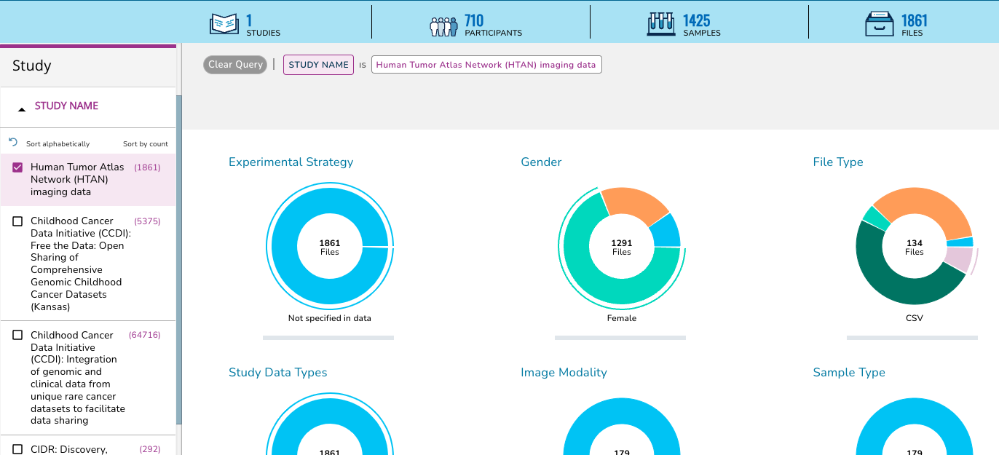
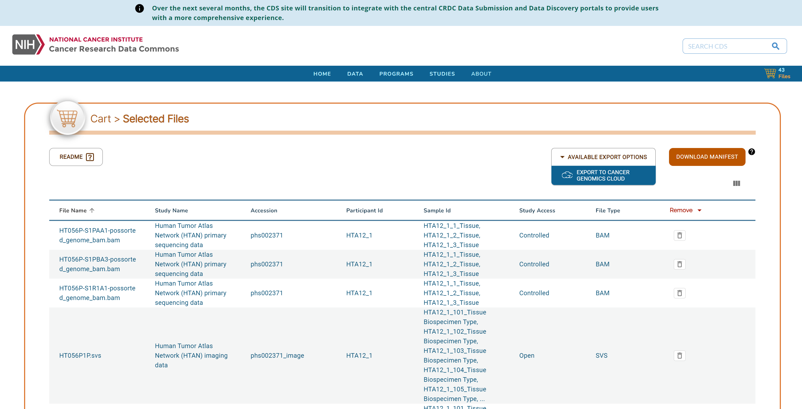

Accessing Images via SB-CGC Cancer Data Service (CDS)
HTAN Imaging Level 2 data is available through the NCI SB-CGC Cancer Data Service (CDS).
Data access via Seven Bridges Cancer Genomics Cloud (SB-CGC) requires a CGC account [register here]. For further information on using SB-CGC resources including programmatic access options, you can explore their online documentation.
CDS access options
To access data via CDS, there are two main options:
- Direct export from the CDS portal.
- Export via a Data Repository Service (DRS) Manifest.
Direct Export
In order to access HTAN imaging data within the CDS Portal, navigate to the portal in a web browser and click on the Explore CDS Data button on the landing page.
On the Data Explorer page, expand the STUDY section on the left sidebar, scroll down, and check the box next to Human Tumor Atlas (HTAN) imaging data.

This action will change the summary panel to reflect selecting HTAN data only.
Scroll down, or click on the Collapse View tab on the upper right just below the query summary line in order to see the tabulated view of all of the participants, samples or files in HTAN.

Click on the Add All Files button, or select the check boxes next to all Participants, Samples or Files for a subselection and then click on the Add Selected button. This action will update your cart icon in the upper right corner.

Clicking on the cart icon, will bring up a list of the selected files. Expand the Available Export Options drop down menu and select Export to Cancer Genomics Cloud.
!!! Note: The Download Manifest can also be chosen instead of Export to Cancer Genomics Cloud. Please see DRS Manifest Files for more information. !!!

Follow the prompts to log in to CGC. Then select a Destination project, check the box to agree to CGC terms and import the data.
DRS Manifest Files
DRS manifests are CSV files which list the files you would like to obtain. They require at minimum the name and drs_uri of each file of interest. For data transfer using a DRS Manifest, there are two main steps:
1. Generate the DRS Manifest
For HTAN data, DRS Manifests can be generated from three different locations:
- CDS Portal
- HTAN Data Portal
- Google BigQuery
Generating a DRS Manifest from the CDS Portal
Follow the directions for Direct Export of files from CDS. In the cart, click on the Download Manifest button on the upper right to download a CSV-formated (Excel compatible) copy of your file list.
Generating a DRS Manifest from the HTAN Data Portal
From the HTAN Data Portal, click CDS/SB-CGC (Open Access) under the Data Access filter.

Navigate to the Files tab, check the box next to Filename in upper left, and then click Download selected files.

Click Download Manifest, which will download a local file called cds_manifest.csv.

Generating a DRS Manifest from Google BigQuery
HTAN metadata and a mapping of HTAN Data File IDs to CDS DRS URIs are available as Google BigQuery tables via the Institute for Systems Biology Cancer Gateway in the Cloud (ISB-CGC) (see Google BigQuery). These tables can be used to subset data to a cohort of interest, and obtain DRS URIs of files to access.
For a step-by-step guide on how to generate a DRS manifest file using Google BigQuery, please see the Python notebook Creating_CDS_Data_Import_Manifests_Using_BQ.ipynb.
2. Import the data to CGC
Once you have your manifest, follow the instructions on SB-CGC’s Import from a DRS server documentation page to import data from a manifest file.